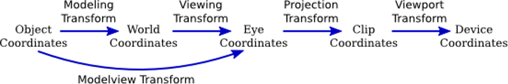
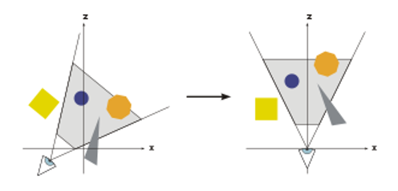
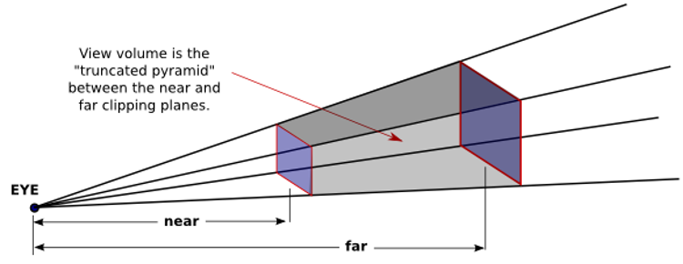
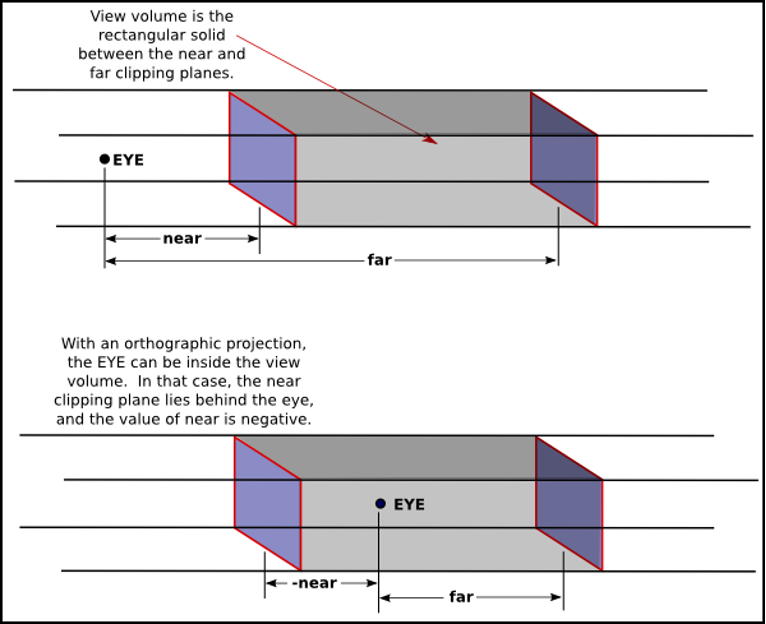
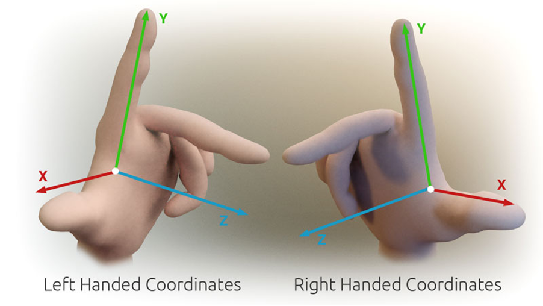

座標空間：一路換了幾次「參照系」
- 懂「座標空間」就是一組參照系（一個原點 + 一組軸）
- 記得 3D→2D 路上換了 4 次參照系：Object → World → Camera → Clip → Screen
- 知道每次換系靠一個矩陣，但矩陣的數學是可選的，這課不用碰
先講個生活比喻
想像你在幫朋友拍照。他臉上的痣長在左臉頰——這是「他自己身上」的說法。 他站在客廳沙發旁——這是「這個房間」的說法。你舉起相機，從你的角度看，他在觀景窗右下角——這是「你看出去」的說法，觀景窗外的東西不會入鏡。 按下快門，他就變成照片上某個像素位置——同一個人沒有動，只是每次換了「用誰的角度描述」。
渲染做的事一模一樣：同一個頂點，一路上不斷被換到新的參照系來描述，直到最後變成螢幕上的像素座標。 這些參照系，在圖學裡就叫座標空間（Coordinate Space）。
一路上的 5 個參照系

- Object Space — 以模型自己為中心（建模時的座標）
- World Space — 以場景原點為中心（物件擺在世界哪裡）
- Camera Space — 以相機為中心（從鏡頭看出去）
- Clip Space — 投影後的標準盒子 [-1,1]（決定看不看得到）
- Screen Space — 最後的螢幕像素座標
Camera Space 長什麼樣

換到 Camera Space，等於「把整個世界搬到鏡頭面前」：原點不再是場景中心，而是鏡頭本身。 OpenGL、Cocos（右手座標系）裡，鏡頭看向 −Z —— 所以正前方的東西，z 值是負的。
每一支箭頭，都有名字
換一次參照系就是一支箭頭，每支箭頭有自己的負責人：
| 從 → 到 | 誰負責 | 做什麼 |
|---|---|---|
| Object → World | Model Matrix | 把模型擺進世界（位置、旋轉、縮放） |
| World → Camera | View Matrix | 換成「從鏡頭看出去」的視角 |
| Camera → Clip | Projection Matrix | 投影（近大遠小），壓進 [-1,1] 的盒子 |
| Clip → Screen | Viewport 轉換 | GPU 自動做：透視除法 + 對應到螢幕像素 |
記住這幾個名字 —— 下一課 shader 裡的變數 modelViewMatrix、projectionMatrix 就是它們。其中 modelViewMatrix = Model × View，把頂點一路帶到 Camera Space；再乘 projectionMatrix 才進 Clip Space。
投影有兩種：透視 vs 正交
「Camera → Clip」這一步（Projection Matrix）有兩種做法，差別就在畫面有沒有「近大遠小」：


- 透視 —— 3D 遊戲場景、第一/三人稱視角，要有縱深感。
- 正交 —— UI、血條、2D 遊戲、等角（isometric）、CAD 製圖 —— 不希望東西因遠近而變大小。
透視常調兩個參數：FOV（視角，大＝廣角看得廣、小＝望遠像放大）、near / far（可視的最近／最遠距離）。
誰做？在哪個管線階段？
把這 5 個空間接回 Lesson 1 的管線 —— 每一步到底誰在做、在哪裡做：
| 轉換 | 矩陣在哪算 | 頂點轉換在哪做 |
|---|---|---|
| Object→World（Model） | CPU（Application） | Vertex Shader |
| World→Camera（View） | CPU（Application） | Vertex Shader |
| Camera→Clip（Projection） | CPU（Application） | Vertex Shader |
| Clip→NDC（÷w 透視除法） | — | GPU 固定功能（光柵化前） |
| NDC→Screen（Viewport） | — | GPU 固定功能（Rasterization） |
實作上 Model×View×Projection 常先乘成一個 MVP 矩陣，World、Camera 這兩個中間座標不一定被單獨算出來 —— 概念上分五步，程式裡常一次乘完。
跟著一顆頂點走一遍
拿上一課房子五邊形的屋頂尖 v1 來走一趟。設定：房子擺在世界 (5, 0, 3)，鏡頭在 (5, 1, 8) 往 −Z 方向看，畫面解析度 1280×720。
| 空間 | v1 的座標（示意） | 發生了什麼 |
|---|---|---|
| Object | (0, 1, 0) | 建模時：屋頂尖在模型原點上方 1 |
| World | (5, 1, 3) | Model：整棟房子被擺到 (5, 0, 3) |
| Camera | (0, 0, -5) | View：從鏡頭看，就在正前方 5 單位 |
| Clip | (0, 0, 0.9) 附近 | Projection：壓進 [-1,1]（z 越遠越靠近 1） |
| Screen | (640, 360) 附近 | Viewport：落在 1280×720 畫面的正中央 |
數字是示意（Clip / Screen 取概略值），重點只有一個：頂點沒有變，變的是「用誰的角度描述它」。
換系靠矩陣 —— 但別緊張
每一支箭頭（換一次參照系）= 頂點乘上一個 4×4 矩陣。你在 Vertex Shader（下一課）會看到這一行：
gl_Position = projectionMatrix * modelViewMatrix * position;那就是這整條路：把頂點從 Object 一路算到 Clip Space。
（順帶一提：程式碼裡常看到 vec4(position, 1.0)、位置變 4 個數字 —— 多出來的 1 是讓矩陣能做「平移」的小技巧（齊次座標），下一課會再遇到；想深究見 遊戲數學_02。）
小心：不同 API 的慣例不一樣

座標系有「慣用手」之分：X 向右、Y 向上之下，Z 朝哪邊是兩派 —— 右手座標系（OpenGL、Cocos Creator）Z 朝向你； 左手座標系（DirectX、Unity）Z 朝裡。
隨堂測驗
1. 依 3D→2D 的順序，依序點選 5 個空間：
你的順序：
2. 下面兩張都是一排真實大小相同的柱子，每根都標了它距鏡頭的距離 d。哪一張是透視投影（近大遠小）？
3. 關於這 5 個空間的轉換，下面哪個說法正確？
4. Shader 裡 modelViewMatrix * position 算完（還沒乘 projection），這個頂點在哪個空間？
5. 模型匯入引擎後整個「鏡像」或前後顛倒，最可能的原因是？
原始資料 / 延伸閱讀
- 本課改寫自 遊戲數學_02_線性代數_座標空間.md（只取直覺，數學留在原文）
- 推薦閱讀：opengl-tutorial — Tutorial 3: Matrices
矩陣哪裡卡住，直接問你的教學 agent（/teach）—— 它可以只講你需要的那一點。